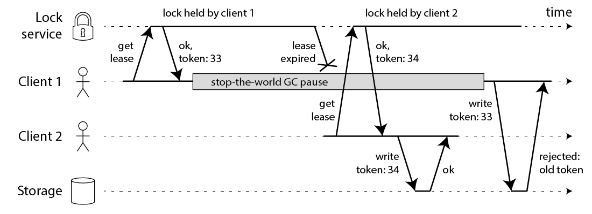

分布式锁
Redis 锁
单节点 Redis 锁
锁的获取：
SET resource_name my_random_value NX PX 30000锁释放：
if redis.call("get",KEYS[1]) == ARGV[1] then
return redis.call("del",KEYS[1])
else
return 0
end缺陷
由于超时时间导致锁被多 Client 同时获取：
- C1 获取锁 A 成功，但由于 GC 等原因线程挂起，锁 A 过期
- C2 获取锁 A 成功
- C1 & C2 同时认为自己加锁成功
异步的主从复制 & Master 宕机，导致锁丢失：
- C1 获取锁 A 成功，Master 宕机，Slave 未同步到锁 A
- C2 获取锁 A 成功
- C1 & C2 同时认为自己加锁成功
RedLock
为了解决 Redis 单点的问题。 Redis 的作者提出了 RedLock 的解决方案。方案非常的巧妙和简洁。 RedLock 的核心思想就是，同时使用多个 Redis Master 来冗余，且这些节点都是完全的独立的，也不需要对这些节点之间的数据进行同步。
假设我们有N个Redis节点，N应该是一个大于2的奇数。RedLock的实现步骤:
- 取得当前时间
- 使用单节点获取锁的方式，依次获取 N 个节点的 Redis 锁。
- 如果获取到的锁的数量大于 个，且获取的时间小于锁的有效时间(lock validity time)就认为获取到了一个有效的锁，锁自动释放时间就是最初的锁释放时间减去之前获取锁所消耗的时间。
- 如果获取锁的数量小于 ，或者在锁的有效时间(lock validity time)内没有获取到足够的锁，就认为获取锁失败，这个时候需要向所有节点发送释放锁的消息。
对于释放锁的实现就很简单了，向所有的 Redis 节点发起释放的操作，无论之前是否获取锁成功。
缺陷

RedLock中，为了防止死锁，锁是具有过期时间的。
- 如果 Client 1 在持有锁的时候，发生了一次很长时间的 FGC 超过了锁的过期时间。锁就被释放了。
- 这个时候 Client 2 又获得了一把锁，提交数据。
- 这个时候 Client 1 从 FGC 中苏醒过来了，又一次提交数据。
这种情况下，数据就发生了错误。RedLock 只是保证了锁的高可用性，并没有保证锁的正确性。
解决方案可以为锁增加一个自增标识，类似于 Kafka 脑裂的处理方式：

同时 RedLock 是严重依赖系统时钟的一致性。如果某个 Redis Master的系统时间发生了错误，造成了它持有的锁提前过期被释放。
每一个系统设计都有自己的侧重或者局限。工程也不是完美的。在现实中工程中不存在完美的解决方案。我们应当深入了解其中的原理，了解解决方案的优缺点。明白选用方案的局限性。是否可以接受方案的局限带来的后果。架构本来就是一门平衡的艺术。
实现基于数据库的乐观锁
提交数据更新之前，每个事务会先检查在该事务读取数据后，有没有其他事务又修改了该数据。如果其他事务有更新的话，正在提交的事务会进行回滚。
Connection conn = DriverManager.getConnection(url, user, password);
conn.setAutoCommit(false);
Statement stmt = conn.createStatement();
// step 1
int oldVersion = getOldVersion(stmt);
// step 2
// 用这个数据库连接做其他的逻辑
// step 3 可用预编译语句
int i = stmt.executeUpdate(
"update optimistic_lock set version = " + (oldVersion + 1) + " where version = " + oldVersion);
// step 4
if (i > 0) {
conn.commit(); // 更新成功表明数据没有被修改，提交事务。
} else {
conn.rollback(); // 更新失败，数据被修改，回滚。
}乐观锁的缺点：
- 会带来大数量的无效更新请求、事务回滚，给DB造成不必要的额外压力。
- 无法保证先到先得，后面的请求可能由于并发压力小了反而有可能处理成功。
基于 ZooKeeper 的分布式锁
基于 ZK 的特性，很容易得出使用 ZK 实现分布式锁的落地方案：
- 使用 ZK 的临时节点和有序节点，每个线程获取锁就是在 ZK 创建一个临时有序的节点，比如在
/lock/目录下。 - 创建节点成功后，获取
/lock目录下的所有临时节点，再判断当前线程创建的节点是否是所有的节点的序号最小的节点。 - 如果当前线程创建的节点是所有节点序号最小的节点，则认为获取锁成功。
- 如果当前线程创建的节点不是所有节点序号最小的节点，则对节点序号的 前一个节点 添加一个事件监听。
缺陷
- 羊群效应：当一个节点变化时，会触发大量的
watches事件，导致集群响应变慢。每个节点尽量少的watches，这里就只注册 前一个节点 的监听 - ZK 集群的读写吞吐量不高
- 网络抖动可能导致 Session 离线，锁被释放